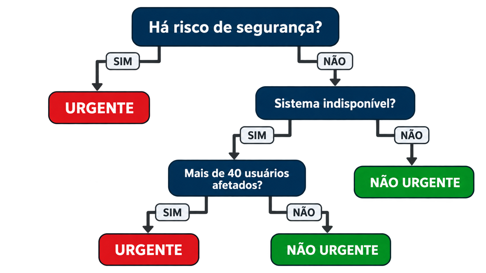
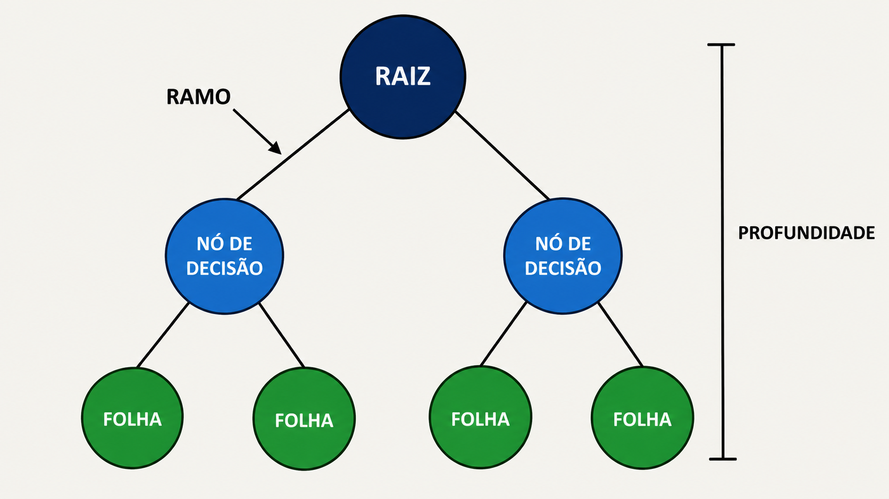
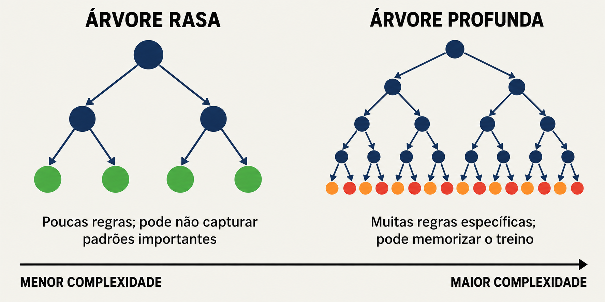
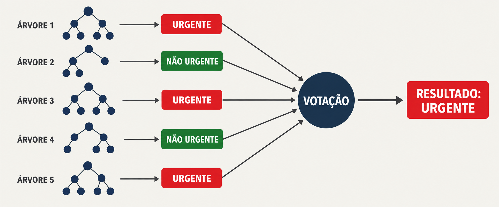

Aula 6
Árvores de Decisão e Métodos de Ensemble
Machine Learning · ADS · 2026.2
Atividade guiada: três chamados
A central de suporte registra três características antes de classificar a urgência.
| Chamado | Risco de segurança | Sistema indisponível | Usuários afetados |
|---|---|---|---|
| A | Sim | Não | 1 |
| B | Não | Sim | 80 |
| C | Não | Não | 1 |
Objetivo: descobrir a classificação de cada chamado usando a árvore do próximo slide.
Árvore usada na atividade

Cada chamado começa na pergunta superior e segue um único ramo até uma decisão final.
Atividade guiada
Preencham uma linha para cada chamado:
| Chamado | Perguntas respondidas, na ordem | Folha alcançada |
|---|---|---|
| A | ... | ... |
| B | ... | ... |
| C | ... | ... |
- Comecem sempre na pergunta superior.
- Usem somente os dados da tabela anterior.
- Parem quando chegarem a URGENTE ou NÃO URGENTE.
Correção da atividade
| Chamado | Caminho percorrido | Resultado |
|---|---|---|
| A | Risco de segurança = sim | Urgente |
| B | Risco = não; sistema = sim; usuários > 40 = sim | Urgente |
| C | Risco = não; sistema = não | Não urgente |
O resultado depende do caminho, não de uma média entre as perguntas.
O mecanismo observado
Uma árvore aplica perguntas em sequência. Cada resposta restringe os caminhos possíveis até restar uma decisão.
Uma observação percorre um caminho. Ela não visita a árvore inteira.
Da regra pronta ao modelo treinado
Na atividade, recebemos as perguntas prontas. No Machine Learning, o algoritmo usa exemplos rotulados para escolher:
qual característica perguntar, qual limite usar e quando parar.
Classificação supervisionada
Classificação supervisionada aprende a prever uma categoria usando exemplos cuja resposta já é conhecida.
| Durante o treino | Depois do treino |
|---|---|
| O modelo recebe chamados e a classe correta. | O modelo recebe um novo chamado e estima a classe. |
Nesta aula, as classes são urgente e não urgente.
Observações, características e alvo
| Elemento | No conjunto de chamados | Notação |
|---|---|---|
| Observação | Uma linha, isto é, um chamado | linha de X |
| Características | Risco, indisponibilidade, quantidade de usuários | X |
| Alvo | Urgente = 1; não urgente = 0 | y |
X descreve o caso. y informa a resposta que o modelo deve aprender.
Definição de árvore de decisão
Uma árvore de decisão é um modelo que divide os dados por regras sucessivas até formar grupos com previsões semelhantes.
- Cada nó testa uma característica.
- Cada ramo representa o resultado do teste.
- Cada folha produz a previsão.
Anatomia da árvore

A profundidade conta quantas decisões existem no caminho mais longo entre a raiz e uma folha.
Leitura de um caminho
risco_seguranca = 0
sistema_indisponivel = 1
usuarios_afetados = 80
1. risco_seguranca? NÃO
2. sistema_indisponivel? SIM
3. usuarios_afetados > 40? SIM
4. previsão: URGENTEO conjunto de decisões do caminho pode ser lido como uma regra lógica com condições conectadas por é mais de 40 usuários afetados.
Divisão de uma característica numérica
Para valores numéricos, o algoritmo testa limites candidatos.
usuarios_afetados <= 40 ?
Ramo SIM: 1, 5, 18, 32, 40
Ramo NÃO: 41, 52, 80, 130O limite 40 separa o conjunto em dois grupos. O algoritmo compara esse limite com outros valores possíveis.
Divisão de uma característica binária
Uma coluna codificada como 0 ou 1 pode ser dividida por um limite de 0,5.
risco_seguranca <= 0.5 ?
SIM → valores 0 → não há risco
NÃO → valores 1 → há riscoPor isso, árvores do scikit-learn exibem perguntas como risco_seguranca <= 0.5.
Impureza: o grau de mistura das classes
| Nó | Urgentes | Não urgentes | Interpretação |
|---|---|---|---|
| A | 10 | 0 | Puro: todos pertencem à mesma classe |
| B | 5 | 5 | Muito misturado: as classes aparecem igualmente |
| C | 8 | 2 | Parcialmente misturado |
Uma divisão útil cria nós filhos menos misturados que o nó original.
Índice Gini
O Gini transforma a mistura das classes em um número:
Gini = 1 - (p₀² + p₁²)
| Distribuição no nó | Gini | Significado |
|---|---|---|
| 100% de uma classe | 0,00 | Nó puro |
| 80% e 20% | 0,32 | Alguma mistura |
| 50% e 50% | 0,50 | Maior mistura binária |
Para esta disciplina, importa interpretar o valor. O scikit-learn faz o cálculo.
Escolha da melhor divisão
- O algoritmo testa características e limites possíveis.
- Calcula a impureza antes e depois de cada divisão.
- Escolhe a divisão que produz a maior redução ponderada de impureza.
Consequência: uma pergunta aparece no topo quando ela separa bem muitos exemplos.
Crescimento recursivo
A árvore repete o mesmo processo em cada grupo criado:
- recebe os exemplos que chegaram ao nó;
- procura a melhor pergunta para esse subconjunto;
- cria novos ramos;
- repete até alcançar uma condição de parada.
As perguntas mais abaixo tratam casos progressivamente mais específicos.
Condições de parada
| Parâmetro | Pergunta que ele responde |
|---|---|
max_depth | Quantos níveis a árvore pode ter? |
min_samples_split | Quantos exemplos são necessários para tentar uma nova divisão? |
min_samples_leaf | Qual o tamanho mínimo de uma folha? |
Sem limites, a árvore pode continuar criando regras para casos muito particulares.
Complexidade da árvore

Subajuste, equilíbrio e sobreajuste
| Situação | Treino | Teste | Diagnóstico |
|---|---|---|---|
| Árvore simples demais | Baixo | Baixo | Subajuste |
| Complexidade adequada | Bom | Próximo do treino | Generalização razoável |
| Árvore específica demais | Muito alto | Bem menor | Sobreajuste |
O objetivo é obter bom desempenho em exemplos novos, não apenas no conjunto de treino.
Treino, teste e baseline
- Treino: exemplos usados para aprender as regras.
- Teste: exemplos separados para estimar o desempenho em dados novos.
- Baseline: estratégia simples que estabelece o mínimo que o modelo deve superar.
Se uma árvore não supera uma regra ingênua no teste, sua complexidade ainda não trouxe benefício.
Parte 3 · Treinamento da árvore
Vamos gerar 600 chamados fictícios para estudar o processo completo.
- São dados didáticos, não dados de uma empresa.
- A regra geradora representa um cenário plausível.
- Adicionaremos erros de rótulo para evitar um mundo “perfeito”.
1. Gerar as características
import numpy as np
import pandas as pd
rng = np.random.default_rng(42)
dados = pd.DataFrame({
"usuarios_afetados": rng.integers(1, 201, 600),
"risco_seguranca": rng.integers(0, 2, 600),
"sistema_indisponivel": rng.integers(0, 2, 600),
"impacto_financeiro": rng.integers(0, 2, 600),
})Resultado esperado: 600 linhas e quatro características. Nas colunas binárias, 0 significa “não” e 1 significa “sim”.
2. Criar o rótulo e incluir ruído
dados["urgente"] = (
(dados["risco_seguranca"] == 1)
| ((dados["sistema_indisponivel"] == 1)
& (dados["usuarios_afetados"] > 40))
| ((dados["impacto_financeiro"] == 1)
& (dados["usuarios_afetados"] > 20))
).astype(int)
indices = rng.choice(dados.index, size=60, replace=False)
dados.loc[indices, "urgente"] = 1 - dados.loc[indices, "urgente"]| significa OU; & significa E. As duas últimas linhas invertem 60 rótulos para simular ruído.
3. Inspecionar antes de modelar
display(dados.head())
display(dados.describe())
print(dados["urgente"].value_counts())
print(dados["urgente"].value_counts(normalize=True))head() mostra exemplos; describe() resume limites; value_counts() revela a distribuição das classes.
4. Separar treino e teste
from sklearn.model_selection import train_test_split
X = dados.drop(columns="urgente")
y = dados["urgente"]
X_treino, X_teste, y_treino, y_teste = train_test_split(
X, y, test_size=0.25, stratify=y, random_state=42
)- Treino: o modelo aprende.
- Teste: simula casos ainda não vistos.
5. Criar um ponto de comparação
from sklearn.dummy import DummyClassifier
baseline = DummyClassifier(strategy="most_frequent")
baseline.fit(X_treino, y_treino)
print("Treino:", baseline.score(X_treino, y_treino))
print("Teste:", baseline.score(X_teste, y_teste))Um modelo útil precisa superar uma estratégia ingênua.
6. Treinar uma árvore controlada
from sklearn.tree import DecisionTreeClassifier
arvore = DecisionTreeClassifier(
max_depth=3,
min_samples_leaf=10,
random_state=42
)
arvore.fit(X_treino, y_treino)
previsoes = arvore.predict(X_teste)fit aprende · predict aplica as regras.
7. Comparar profundidades
resultados = []
for profundidade in [1, 3, 5, None]:
modelo = DecisionTreeClassifier(
max_depth=profundidade, random_state=42
)
modelo.fit(X_treino, y_treino)
resultados.append({
"profundidade": profundidade,
"treino": modelo.score(X_treino, y_treino),
"teste": modelo.score(X_teste, y_teste)
})
pd.DataFrame(resultados)Compare treino e teste. Profundidade maior costuma elevar o treino; o teste indica se a melhoria generaliza.
Como interpretar a tabela?
| Sinal observado | Hipótese | Ação possível |
|---|---|---|
| Treino e teste baixos | Subajuste | Permitir mais complexidade |
| Treino alto, teste bem menor | Sobreajuste | Limitar profundidade/folhas |
| Teste supera baseline com diferença pequena | Generalização razoável | Avaliar outras métricas |
8. Visualizar as regras aprendidas
import matplotlib.pyplot as plt
from sklearn.tree import plot_tree
plt.figure(figsize=(16, 8))
plot_tree(
arvore,
feature_names=X.columns,
class_names=["não urgente", "urgente"],
filled=True,
rounded=True
)
plt.show()O gráfico permite converter cada caminho em uma regra legível e verificar quais características o modelo priorizou.
Como ler um nó do gráfico?
risco_seguranca <= 0.5
gini = 0.43
samples = 450
value = [142, 308]
class = urgente- regra: condição aplicada naquele nó
- samples: exemplos de treino que chegaram ali
- value: contagem por classe
- class: previsão majoritária
Intervalo · 8 minutos
Ao voltar, vamos descobrir por que “90% de acurácia” pode esconder um modelo ruim.
Parte 4 · Avaliação do classificador
Acurácia = proporção total de previsões corretas.
Se apenas 5 de 100 chamados são urgentes, prever “não urgente” sempre alcança 95%.
Mas deixa passar todos os chamados urgentes.
Matriz de confusão
| Predito: não urgente | Predito: urgente | |
|---|---|---|
| Real: não urgente | Verdadeiro negativo | Falso positivo |
| Real: urgente | Falso negativo | Verdadeiro positivo |
“Positivo” significa a classe de interesse: urgente.
Exemplo com 100 chamados
| Predito: não | Predito: sim | |
|---|---|---|
| Real: não | 70 | 10 |
| Real: sim | 5 | 15 |
- 85 acertos: 70 + 15
- 15 erros: 10 + 5
- Acurácia: 85%
Os erros têm o mesmo custo?
Falso positivo
Chamado comum marcado como urgente.
Custo: tempo e fila.
Falso negativo
Chamado urgente marcado como comum.
Custo: incidente ignorado.
A métrica deve refletir o risco do problema.
Precisão: posso confiar nos alertas?
Entre os chamados previstos como urgentes, quantos realmente eram urgentes?
precisão = VP / (VP + FP)
No exemplo: 15 / (15 + 10) = 60%
Precisão alta → menos alarmes falsos.
Recall: quantos urgentes encontramos?
Entre os chamados realmente urgentes, quantos foram identificados?
recall = VP / (VP + FN)
No exemplo: 15 / (15 + 5) = 75%
Recall alto → menos urgentes perdidos.
F1: equilíbrio entre precisão e recall
O F1 combina as duas métricas e cai quando uma delas é muito baixa.
F1 = 2 × (precisão × recall) / (precisão + recall)
Útil quando as classes são desbalanceadas e queremos equilíbrio.
Qual métrica priorizar?
| Contexto | Preocupação | Métrica em destaque |
|---|---|---|
| Incidente de segurança | Não perder ameaça real | Recall |
| Alerta exige ação cara | Evitar alarmes falsos | Precisão |
| Ambos importam | Equilibrar erros | F1 + matriz |
| Classes equilibradas | Visão geral inicial | Acurácia |
Calcular as métricas no scikit-learn
from sklearn.metrics import (
accuracy_score, precision_score, recall_score,
f1_score, ConfusionMatrixDisplay
)
print("Acurácia:", accuracy_score(y_teste, previsoes))
print("Precisão:", precision_score(y_teste, previsoes))
print("Recall:", recall_score(y_teste, previsoes))
print("F1:", f1_score(y_teste, previsoes))
ConfusionMatrixDisplay.from_predictions(y_teste, previsoes)Parte 5 · Por que combinar árvores?
Uma pequena mudança nos dados pode produzir regras diferentes.
- Alta variância
- Sensível a amostras específicas
- Árvores profundas tendem a sobreajustar
Random Forest: muitas árvores, uma previsão

A floresta reduz a dependência de uma única árvore ao combinar votos de modelos diferentes.
1. Amostras bootstrap
Cada árvore recebe uma amostra do treino:
- com o mesmo tamanho aproximado;
- sorteada com reposição;
- alguns exemplos se repetem e outros ficam de fora.
Resultado: árvores aprendem perspectivas diferentes.
2. Subconjuntos de características
Em cada divisão, a árvore considera apenas parte das colunas disponíveis.
Nem todas as árvores podem depender sempre da característica mais forte.
Isso reduz a semelhança entre as árvores.
3. Votação majoritária
Cada árvore classifica o mesmo chamado. A classe com mais votos se torna a previsão final.
| Votos urgentes | Votos não urgentes | Previsão |
|---|---|---|
| 3 | 2 | Urgente |
Uma árvore pode errar sem determinar sozinha o resultado da floresta.
Treinar uma Random Forest
from sklearn.ensemble import RandomForestClassifier
floresta = RandomForestClassifier(
n_estimators=200,
max_depth=6,
min_samples_leaf=5,
random_state=42,
n_jobs=-1
)
floresta.fit(X_treino, y_treino)
prev_floresta = floresta.predict(X_teste)Parâmetros essenciais da floresta
| Parâmetro | Efeito principal |
|---|---|
n_estimators | Quantidade de árvores; mais estabilidade, mais custo |
max_depth | Complexidade de cada árvore |
min_samples_leaf | Evita folhas muito específicas |
max_features | Diversidade das características por divisão |
Comparação justa
Árvore e floresta devem usar:
- o mesmo conjunto de treino;
- o mesmo conjunto de teste;
- as mesmas métricas;
- o mesmo significado para a classe positiva.
avaliar("Árvore", y_teste, previsoes)
avaliar("Floresta", y_teste, prev_floresta)Importância das características: use com cautela
importancias = pd.Series(
floresta.feature_importances_,
index=X.columns
).sort_values(ascending=False)
display(importancias)- Indica contribuição para as divisões do modelo.
- Não prova causa e efeito.
- Pode mudar com dados e características correlacionadas.
Parte 6 · Laboratório guiado · 15 minutos
- Teste duas combinações de
max_depthemin_samples_leaf. - Registre acurácia de treino e de teste.
- Calcule matriz, precisão, recall e F1.
- Compare a melhor árvore com a floresta.
- Escolha um modelo e escreva uma justificativa.
Regra: escolha por evidência e pelo custo dos erros.
Entrega da dupla
| Modelo | Treino | Teste | Precisão | Recall | F1 |
|---|---|---|---|---|---|
| Árvore A | ... | ... | ... | ... | ... |
| Árvore B | ... | ... | ... | ... | ... |
| Floresta | ... | ... | ... | ... | ... |
Conclusão em 3 frases: escolha, evidência e limitação.
Erros comuns no laboratório
- Avaliar no treino e chamar isso de desempenho final.
- Comparar modelos usando divisões diferentes.
- Olhar apenas acurácia.
- Alterar muitos parâmetros ao mesmo tempo.
- Confundir correlação/importância com causalidade.
- Copiar números sem explicar o que significam.
Defesa rápida · 8 minutos
Cada dupla tem 45 segundos para responder:
- Qual modelo vocês escolheram?
- Quais números sustentam a escolha?
- Qual erro merece mais atenção?
- Que limitação impede uso imediato em produção?
Mapa do que aprendemos
Dados rotulados → divisão treino/teste → baseline → árvore → controle de complexidade → métricas → floresta → comparação
- Árvores transformam dados em regras hierárquicas.
- Limites ajudam a generalizar.
- Métricas respondem perguntas diferentes.
- Random Forest troca simplicidade por estabilidade.
Bilhete de saída
- Por que separar treino e teste?
- Qual sinal sugere sobreajuste?
- Quando o recall é mais importante que a precisão?
- Como a Random Forest cria diversidade?
Responda individualmente em até quatro linhas.
Próximos passos
- Preparação de dados reais e pipelines
- Validação cruzada e ajuste de hiperparâmetros
- Comparação responsável de modelos
- Implantação simples e monitoramento
Hoje construímos a base para essas decisões.
Referências para continuar
- scikit-learn: Decision Trees
- scikit-learn: Ensemble Methods
- scikit-learn: Model Evaluation
- Géron, A. Hands-On Machine Learning
Material da aula: slides + notebook da prática guiada.